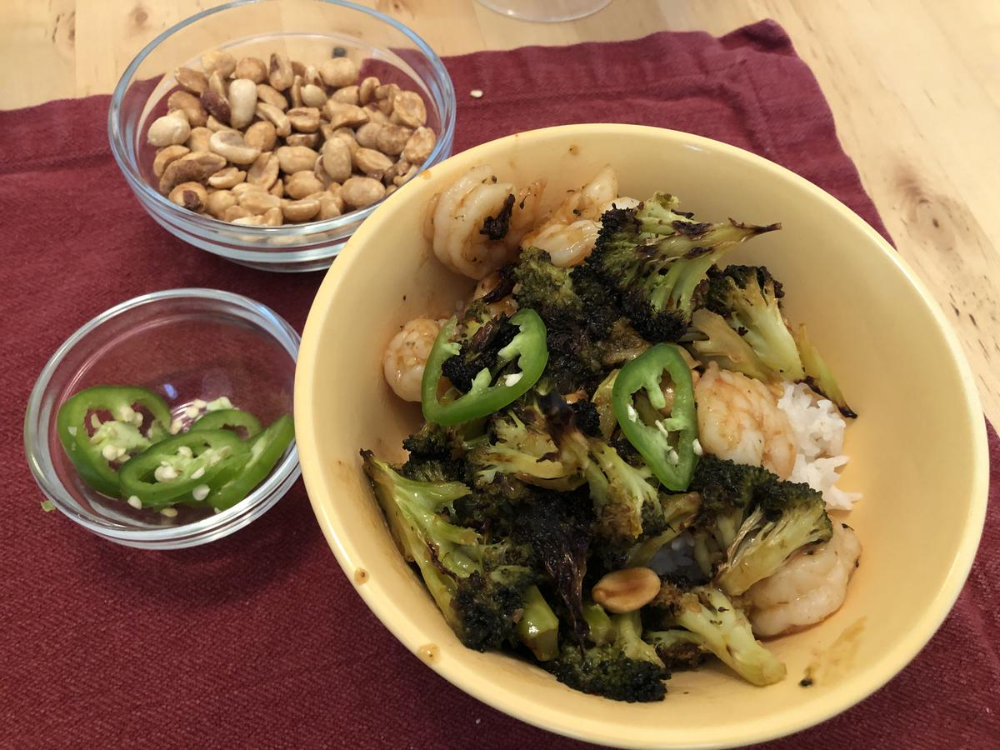

Based on Chrissy Teigen Cravings Hungry for More, pg. 141
Personal rating: 5 / 5

1/4 cup vegetable oil
1 Tbsp sesame oil
1/4 tsp cayenne pepper
2 lbs broccoli (2 smaller heads)
salt and pepper
1/4 cup Thai sweet chili sauce
2 Tbsp oyster sauce
2 Tbsp sesame oil
2 Tbsp vegetable oil
1.5 Tbsp Sriracha
1 Tbsp soy sauce
1 Tbsp unseasoned rice vinegar
2 cloves garlic, finely minced
1/2 cup chopped salted roasted peanuts
1 scallion thinly sliced
1 fresh jalapeno, sliced into rings